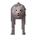
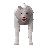
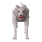
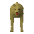
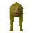

Wolf bones
| Config name | wolf_bones |
| Item id | 2859 |
| Value | 1 gp |
| Weight | 500g |
| Members | Yes |
| Tradeable | Yes |
| Stackable | No |
| Options | Bury |
| Category | bones |
| Defined in | scripts/skill_prayer/configs/bones.obj |
Wolf bones
Bones of a recently slain wolf.
Used to make
| Skill | Level | XP | Ingredients | Tool | How | Where | Makes |
|---|---|---|---|---|---|---|---|
| Fletching | 5 | 2.5 | use on item | members; a random 2-6 per action; requires Big Chompy Bird Hunting (%chompybird) |
Dropped by
| NPC | Level | Quantity | Rarity | Via | Notes |
|---|---|---|---|---|---|
 Wolf | 64 | 1 | Always | ||
 White wolf | 25 | 1 | Always | ||
| 38 | 1 | Always | |||
 Big Wolf | 73 | 1 | Always | ||
| 25 | 1 | Always | |||
| 24 | 1 | Always | |||
| 24 | 1 | Always | |||
| 24 | 1 | Always | |||
| 24 | 1 | Always | |||
| 24 | 1 | Always | |||
| 24 | 1 | Always | |||
| 88 | 1 | Always | |||
| 88 | 1 | Always | |||
| 88 | 1 | Always | |||
| 88 | 1 | Always | |||
| 88 | 1 | Always | |||
| 88 | 1 | Always | |||
 Desert Wolf | 27 | 1 | Always | ||
 Jungle Wolf | 64 | 1 | Always |
Referenced in scripts
scripts/_test/scripts/cheats/cheat_bank.rs2scripts/skill_crafting/scripts/gem/uncut_gem.rs2scripts/skill_fletching/scripts/ogre_arrows.rs2